Builds
Engineering projects and prototypes.
Testing
-
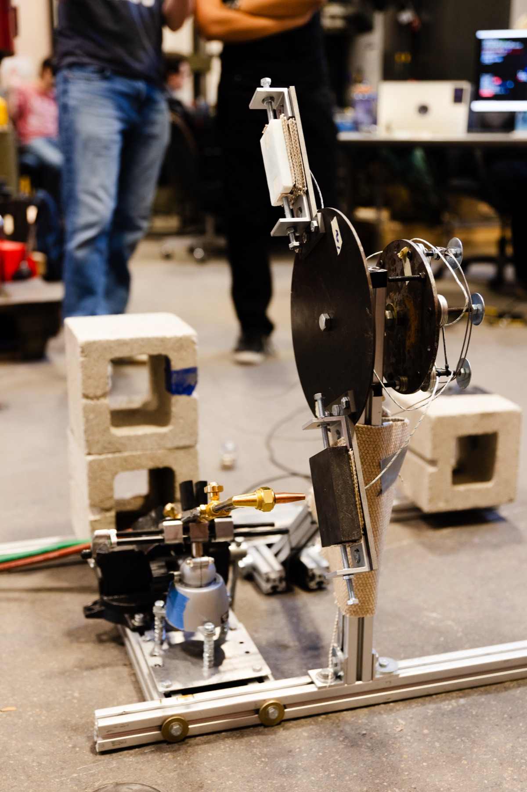
Ablative Material Testing Fixture Torch-based ablative testing and graphite-calibrated inverse heat-flux estimation. -
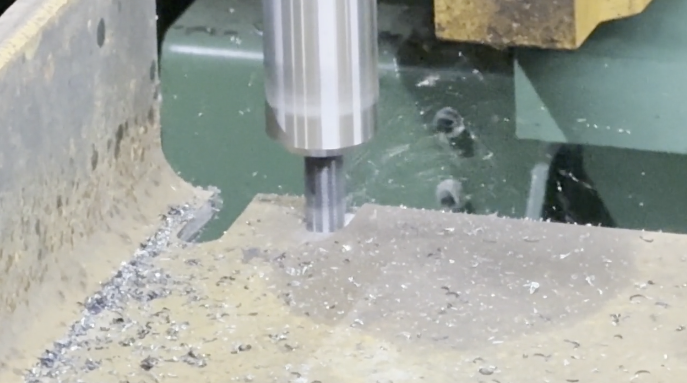
Spindle Vibration Reduction Mitigating spindle vibration via experimental modal analysis and bearing-stack redesign. -
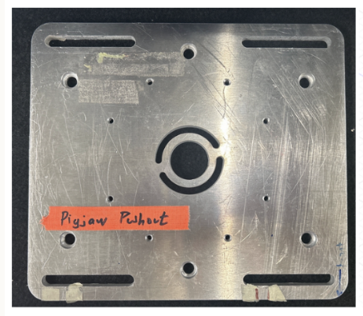
Pigjaw Fixture Testing PLA fixture analysis and the metal push-out fixture I built for scaffold–bone testing.
Mechanical Design
-
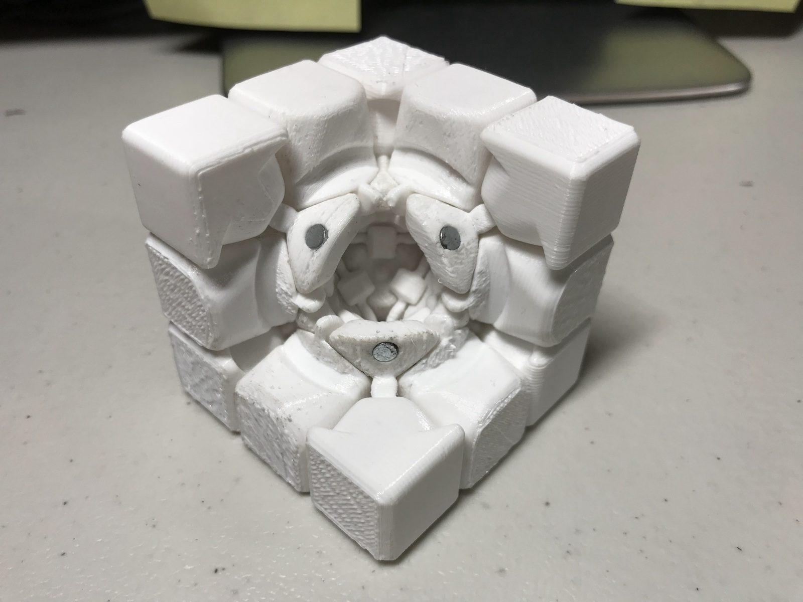
Magnetically Stabilized Puzzle Cube A mechanically redesigned Rubik’s-style cube optimized for stability, precision, and speed solving. -
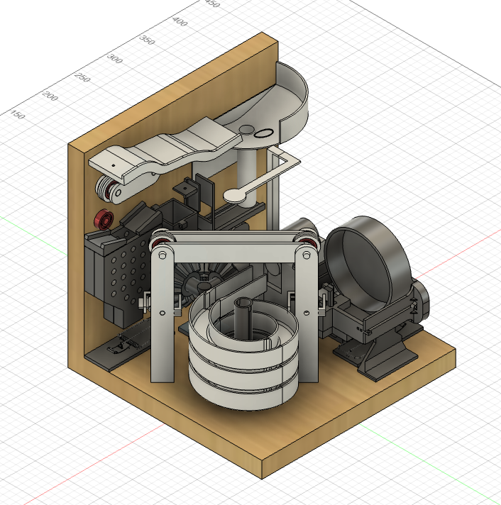
Desktop Rube Goldberg Machine A 10+ step marble-powered machine designed under strict DFM constraints. -
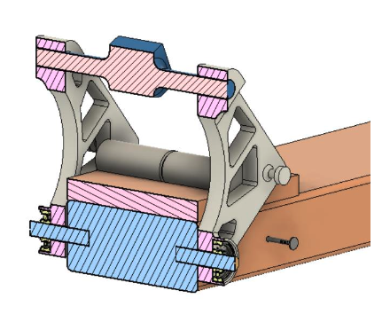
Pedal-Actuated Guitar String Tensioner Low-cost pedal mechanism enabling controlled pitch modulation via precise string tension adjustment.
Simulation & Analysis
-
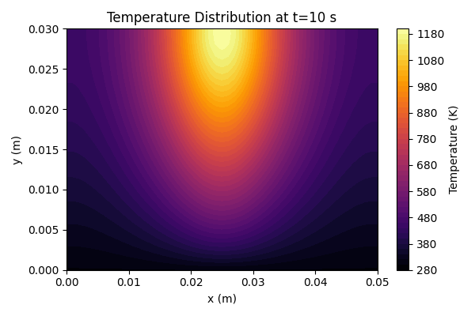
2D Heat Transfer Simulation Explicit finite-difference simulation of transient heat conduction with nonlinear radiation boundary conditions. -
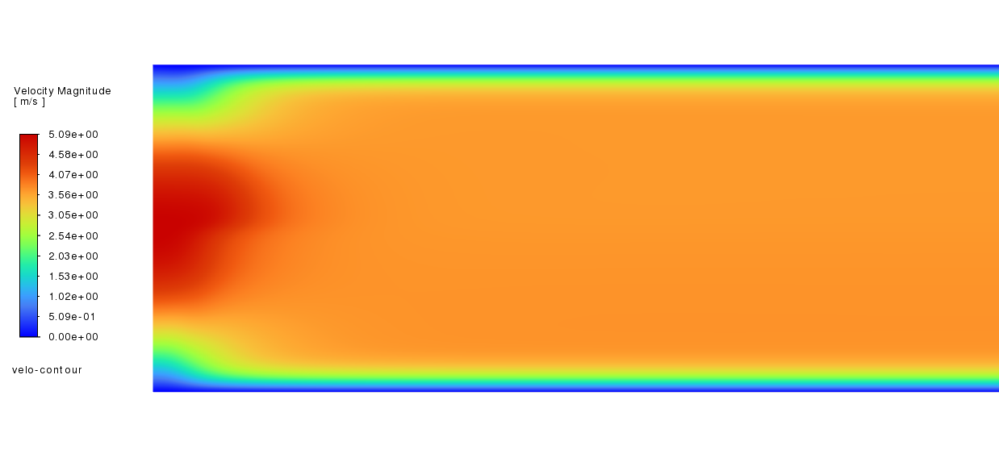
Microchannel Transport Processes Numerical and CFD analysis of coupled heat, mass, and reaction transport in a pressure-driven microchannel reactor.
Computing & Instrumentation
-
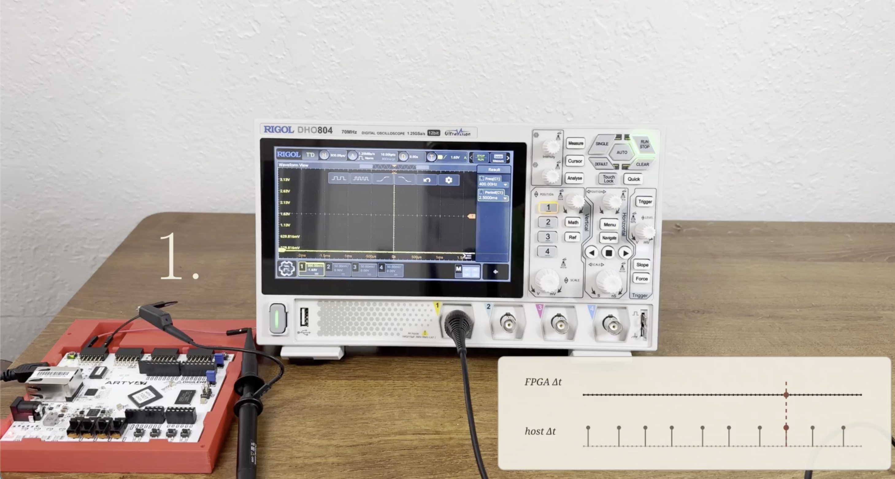
FPGA Data Acquisition Platform Timestamped accelerometer acquisition, packet integrity checks, calibration, and stationary-noise analysis. -
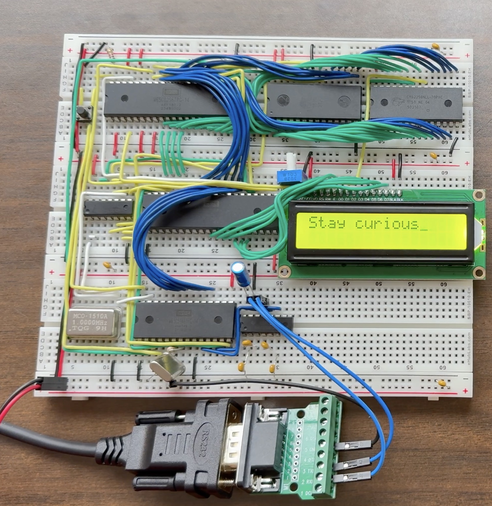
Numerical Methods on a 6502 Processor Runge–Kutta in BASIC on a breadboard computer, with an RLC simulation and UART communication. -
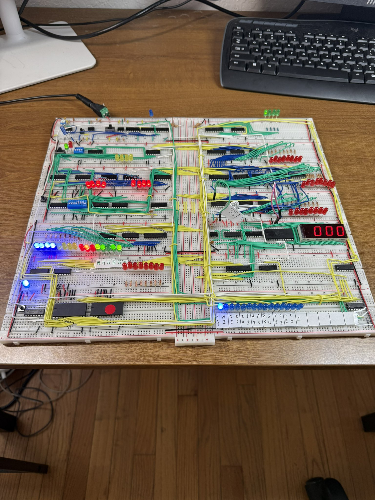
8-bit CPU from Scratch A breadboard computer built from logic chips, with visible registers, control signals, and program output. -
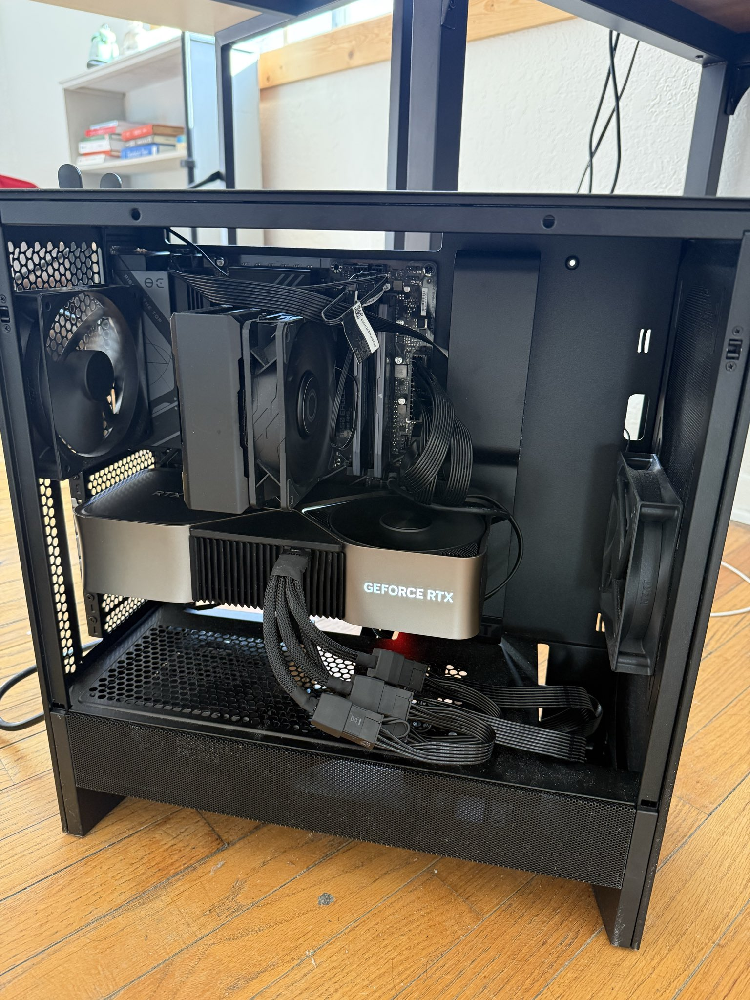
GPT-2 from Scratch GPT-2 training from scratch and Karpathy’s Neural Networks: Zero to Hero series.